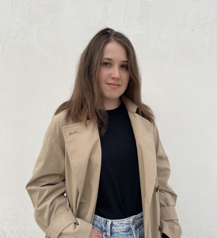
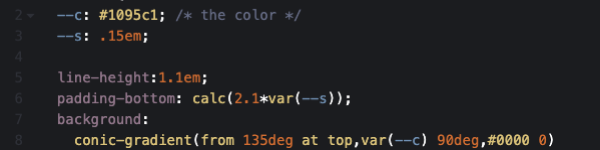

Коды для создания кнопок в Тильде
Коды для
которые можно переиспользовать
создания кнопок
с различными эффектами
в Тильде
container {margin: 0 auto; max-width: 1000px;}
body {height: 100%; font-size: 10px;}
featured-img {background: yellow; width: 50%; position: relative;}
container {margin: 0 auto; max-width: 1000px;}
Привет!
Меня зовут Яна — я веб-дизайнер и я собрала для тебя несколько интересных решений оформления кнопок, который ты сможешь переиспользовать в своих проектах.
Что значит переиспользовать код?
Тебе не нужно писать код с нуля, достаточно будет поменять значения цвета и название кнопки, а я покажу как это сделать и не запутаться
